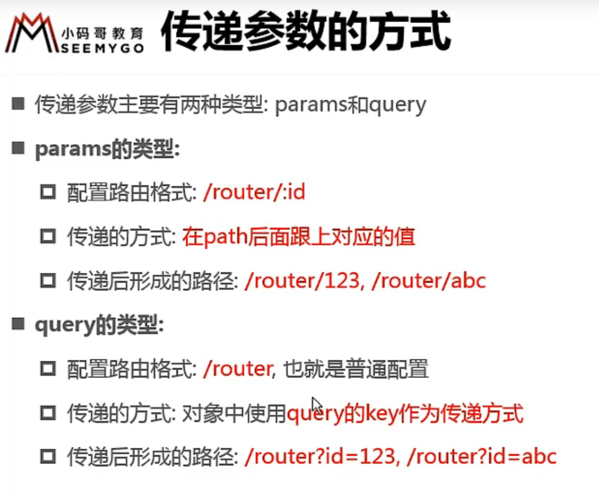

<!-- 动态绑定路由 -->

    <!-- params的类型 -->
    <!-- 1. 创建一个组件 -->
    <!-- 2. 在 router 中配置动态路由, 
            然后需要在路径后面拼接内容 :userId(userId可以自定义)
            (这一步是为了在页面中能拿到用户id) -->

    <!-- 3. 为了能让用户id在路径显示，需要动态拿到用户id。
            把用户id以对象属性的方式存到vue中,
            然后把属性名用 v-bind 在router-link 中绑定 -->
            data() {
                return {
                    userId: 'lisi'
                    }
                }

    <!-- 4. 在页面中拿到用户id
            this.$route.params.userId
            (↑具体看下 6.init-vue-router 的 user组件。
              这里的 userId 对应第二步的 userId) -->


    <!-- query 的类型 -->
    <!-- 1. 按照正常路由创建.vue文件 -->
    <!-- 2. 按照正常配置路由 -->
    <!-- 3. router-link 的to属性写成对象的形式 写法如下 -->
    <router-link :to="{path: '',
                       query: {
                             ↓传递页面可以拿到的参数
                             name: '小明',
                             age: '23'
                        }
                    }">
    </router-link>
    